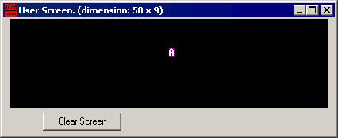

Перевод: Поляков А.В. http://www.avprog.narod.ru
Доступ к памяти
Для доступа к памяти можно использовать следующие четыре регистра: BX, SI, DI, BP.
Комбинируя эти регистры внутри квадратных скобок [ ], мы можем получить доступ к различным местоположениям в памяти. Возможны следующие комбинации (режимы адресации):
|
[BX + SI] [BX + DI] [BP + SI] [BP + DI] |
[SI] [DI] d16 (только переменная-смещение) [BX] |
[BX + SI] + d8 [BX + DI] + d8 [BP + SI] + d8 [BP + DI] + d8 |
|
[SI] + d8 [DI] + d8 [BP] + d8 [BX] + d8 |
[BX + SI] + d16 [BX + DI] + d16 [BP + SI] + d16 [BP + DI] + d16 |
[SI] + d16 [DI] + d16 [BP] + d16 [BX] + d16 |
d8 - обозначение для 8-ми битовой подстановки.
d16 - обозначение для 16-ми битовой подстановки.
Подстановка может быть непосредственным значением или смещением переменной, или даже и тем и другим. Она преобразуется компилятором в одиночное непосредственное значение.
Подстановка может быть как внутри так и вне квадратных скобок ([ ]), компилятор генерирует одинаковый машинный код в обоих случаях.
Подстановка - это величина со знаком, поэтому она может быть как положительной, так и отрицательной.
Обычно компилятор различает d8 и d16 и генерирует требуемый машинный код.
Например, представим что DS = 100, BX = 30, SI = 70.
Следующий способ адресации: [BX + SI] + 25
вычисляется процессором для этого физического адреса:
По умолчанию сегментный регистр DS используется для всех способов адресации, кроме способа, который используется с регистром BP. В последнем случае используют сегментный регистр SS.
Легко запомнить все возможные комбинации с помощью таблицы:

Вы можете формировать все имеющие силу комбинации, взяв по одному пункту из каждого столбца, либо пропустить какой-либо столбец и ничего из него не взять. Как вы можете видеть, BX и BP никогда не идут вместе. SI и DI также не могут быть вместе. Здесь приведен пример имеющего силу способа адресации: [BX+5].
Значение в сегментном регистре (CS, DS, SS, ES) называется "segment (сегмент)",
а значение в регистре общего назначения (BX, SI, DI, BP) называется "offset (смещение)".
Если DS содержит значение 1234h, а SI содержит значение 7890h, то это можно записать как 1234:7890. Физический адрес будет таким: 1234h * 10h + 7890h = 19BD0h.
Чтобы указать компилятору тип данных,
должны использоваться эти префиксы:
BYTE PTR - для байта.
WORD PTR - для слова (два байта).
Например:
BYTE PTR [BX] ; доступ к байту.
или
WORD PTR [BX] ; доступ к слову.
Emu8086 поддерживает короткие префиксы:b. - для BYTE PTR
w. - для WORD PTR
иногда компилятор может вычислить тип данных автоматически, но вы не можете и не должны полагаться на это, если один из операндов является непосредственным значением.
Команда MOV
-
Копирует второй операнд (источник) в первый
операнд (приемник).
-
Операнд-источник может быть непосредственным значением, регистром
общего назначения или местоположением памяти.
-
Регистр-приемник может быть регистром общего назначения
или местоположением памяти.
- Оба операнда должны иметь одинаковый размер байта или слова.
Эти типы операндов поддерживаются:MOV регистр, памятьрегистр: AX, BX, CX, DX, AH, AL, BL, BH, CH, CL, DH, DL, DI, SI, BP, SP. память: [BX], [BX+SI+7], переменная, и т.п... непосредственное значение: 5, -24, 3Fh, 10001101b, и т.п... |
Для сегментных регистров поддерживаются только эти типы MOV:MOV сегментный регистр, памятьсегментный регистр: DS, ES, SS, и только как второй операнд: CS. регистр: AX, BX, CX, DX, AH, AL, BL, BH, CH, CL, DH, DL, DI, SI, BP, SP. память: [BX], [BX+SI+7], переменная и т.п... |
Команда MOV не может использоваться для установки значений регистров CS и IP.
Здесь короткая программа, которая демонстрирует использование команды MOV:#MAKE_COM# ; команда компилятору для создания СОМ-файла. ORG 100h ; директива, необходимая для COM-программы. MOV AX, 0B800h ; установить AX в шестнадцатиричное значение B800h. MOV DS, AX ; копировать значение из AX в DS. MOV CL, 'A' ; установить в CL ASCII-код символа 'A', т.е. 41h. MOV CH, 01011111b ; установить CH в двоичное значение. MOV BX, 15Eh ; установить BX в 15Eh. MOV [BX], CX ; копировать содержимое из CX в память с адресом B800:015E RET ; вернуться в операционную систему. |
Вы можете скопировать и вставить вышеописанную программу в редактор кода Emu8086, и нажать кнопку [Compile and Emulate] (или нажать клавишу F5 на клавиатуре).
Окно эмулятора должно открыться с загруженной программой. Щелкните кнопку
Как скопировать и вставить:
-
Выделите техт программы с помощью мыши: щелкните перед текстом и, не
отпуская кнопки, продвигайте мышь, пока не будет выделен нужный текст.
- Нажмите комбинацию клавиш Ctrl + C для копирования.
- Перейдите в редактор кода Emu8086 и нажмите комбинацию клавиш Ctrl + V, чтобы вставить текст.
Как вы могли догадаться, точка с запятой (";") используется для комментариев. Все символы, которые следуют за ";", игнорируются компилятором.
Вы должны увидеть нечто подобное, когда программа закончит свою работу:

Фактически, вышеописанная программа записывает данные непосредственно в видеопамять, так что MOV - это очень мощная инструкция.